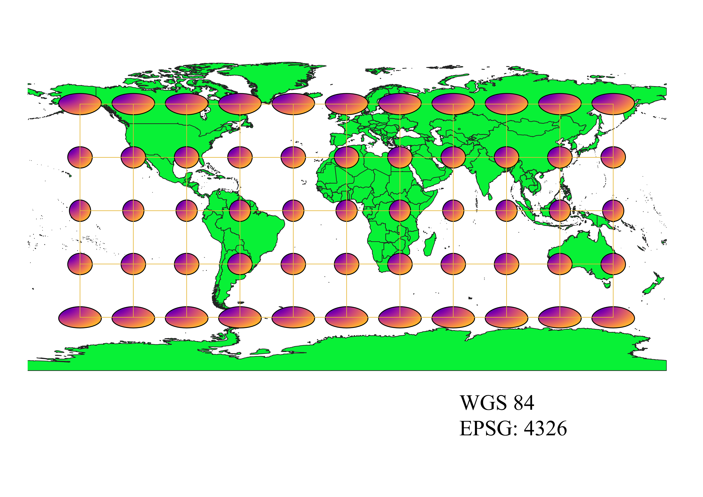
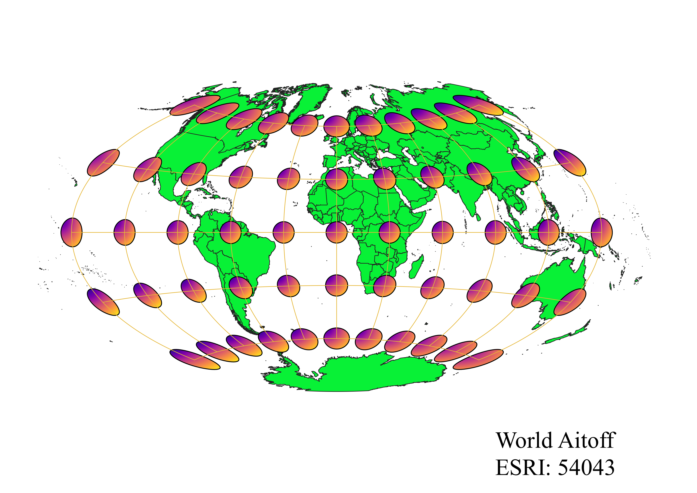
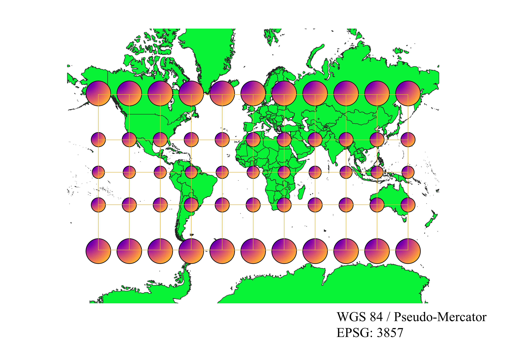
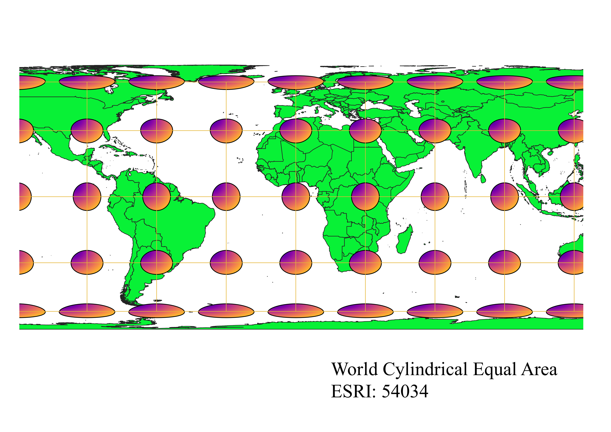
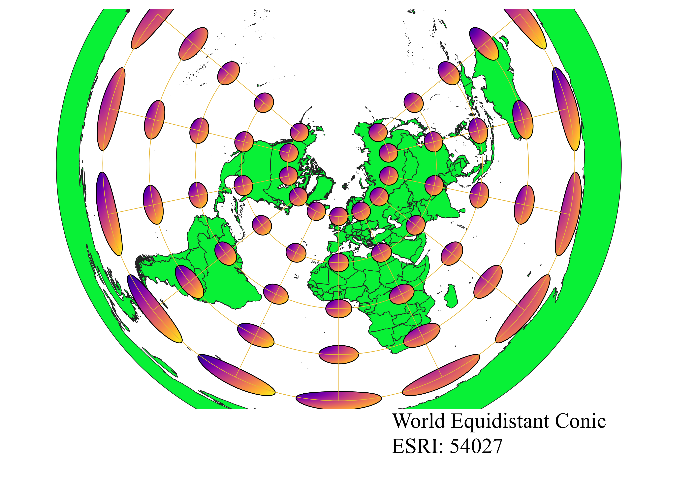
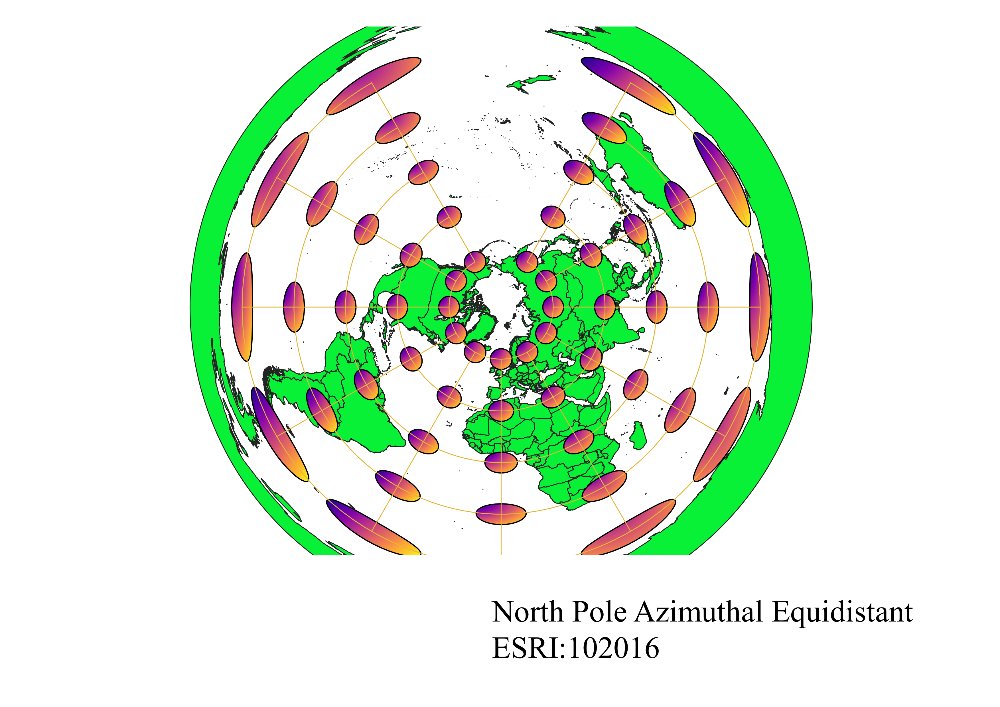
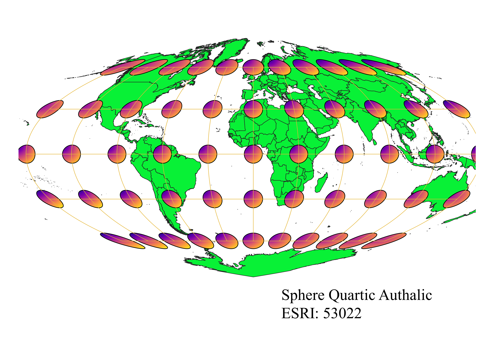
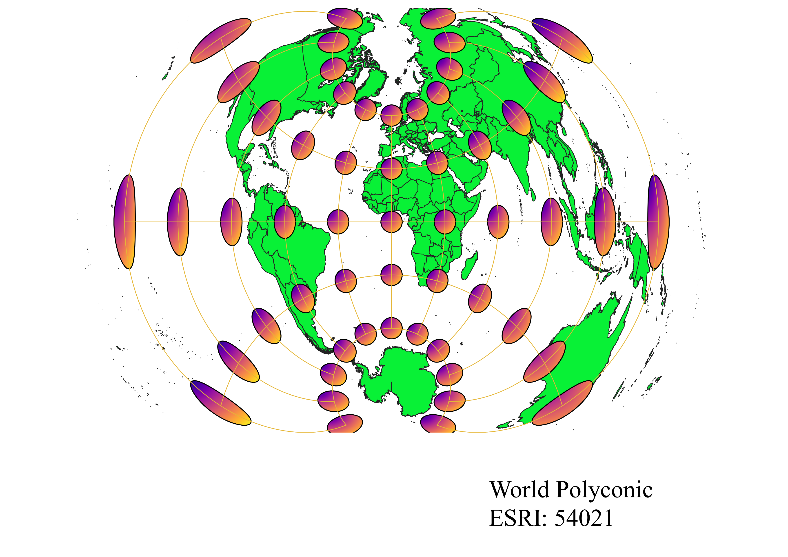

Using QGIS to explore the different world projections
How I displayed different map projections using QGIS:
>
I began by opening the natural earth shapefile which contained all continents on the planet. It was also important to have the plug-in Indicatrix Mapper downloaded. With everything ready I could then change the Coordinate Reference Systems to whichever projection I had to evaluate. Once the projection was selected I could run Indicatrix Mapper on the shapefile in the projection to see where distortion is the greatest based on size and shape of the Tissot Circles. I could then change the current CRS into a new projection and the Indicatrix Mapper would change based on the projection being used.
WGS84 Projection
In my initial observations I noticed that this projection is similar to the Mercator projection, which would make it a cylindrical projection. As one moves towards the poles, the Tissot circles elongate into ellipses. The elongation means that areas of land increase in distortion with decreasing distance from the poles. This is clearly evident in the size of Antarctica and elongation in other continents that run East to West. However, shape is preserved, as each land mass maintains proper boarders. Since shape is preserved, the map would also be conformal.

Aitoff Projection
This is an equatorial azimuthal projection since there is one point of minimal distortion at the center of the map on the equator. Unlike WGS84, the graticules are curved towards the poles, with distortion increasing towards the poles or farthest points East and West. Every feature is distorted in this map. Since the ellipses are elongated in the North and South direction, there is greater distortion in the area of land North to South instead of East to West, like in the WGS84 projection. A benefit is that azimuthal projections tend to preserve direction best.

Pseudo-Mercator Projection
Similar to the WGS84 projection, the Pseudo-Mercator projection is a cylindrical projection. With decreasing distance to the poles, area of the land masses increases, which is presented in the Tissot circles increasing in size near the poles. This is seen in how Greenland seems to be the same size as Africa. Since the projection distorts area, shape is preserved, as each continent maintains the expected shape. For this Mercator projection, there is a small amount of change in the distortion for the Tissot circles within one graticule of the equator. A benefit to Mercators is that direction is also preserved, which is why the projections are used for navigation.

Sphere Winkel I Projection
Since the East to West graticules are straight, the Sphere Winkel I projection is a cylindrical projection. Every Tissot circle has some level of distortion in shape and size, since they are not small perfect circles, and the distortion increases as a location moves away from the equatorial center circle. Since the projection name includes sphere, its implied that this projection is only suitable for spheres, not other shapes. One benefit is that distortion remains the same on every East to West graticule.

World Cylindrical Equal Area Projection
As implied by its name, the World Cylindrical equal Area is a cylindrical projection. The name also implies that the projection preserves area, which means shape is distorted. As seen through the Tissot circles, distortion is significant near the poles. Based on the shape of the circles, there is an elongation east to west and a compression north to south, which is present in the shape of Greenland, as it is wide yet compressed.

World Equidistant Conic Projection
Based on the Tissot circles and its name, the world equidistant conic projection is a conic projection. The projection also preserves distance as it is an equidistant projection. Distance is preserved only on the North to South graticules, not East to West. A benefit is that there is no distortion on East to West graticules where the conic projection was placed. With increasing distance South from points that contacted the conic projection, the Tissot circles present increasing distortion in shape and size. Despite increasing distortion, the projection is good for East to West regions since distortion remains constant on the parallels.

North Pole Azimuthal Equidistant Projection
The name of the projection indicates that it is an azimuthal projection. The name also indicates that distance is preserved in the projection, which means there is an accurate scale for graticules that pass through the center. From the central point of contact, the projection also preserves direction. As seen with the Tissot circles, distortion of shape and area significantly increases as distance from the center increases. Unlike traditional world maps, Antarctica makes up the edge of the map, making it extremely distorted.

Sphere Quartic Authalic Projection
With parallel graticules, this is an oddly shaped cylindrical projection. With the Tissot circles, area seems to be relatively maintained until the edges of the map, where there is some North to South distortion, which is most noticeable in the poles. Since area is well preserved, shape is going to be distorted. The Tissot circles show minimal distortion along the entire equator.

World Polyconic Projection
Some observations

Data used for this project
Download Natrual Earth 1:10m Cultural Vector